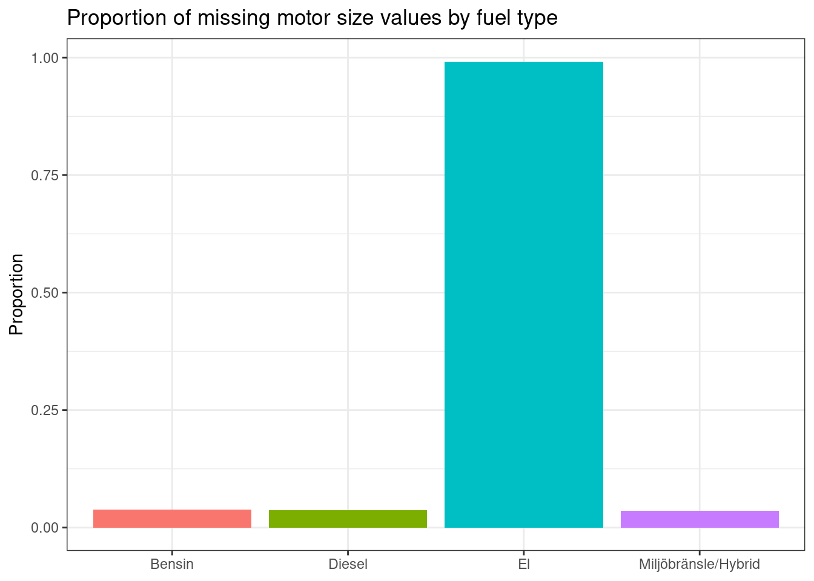
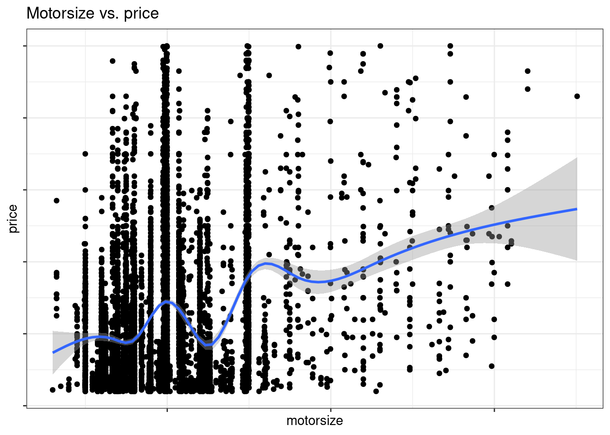
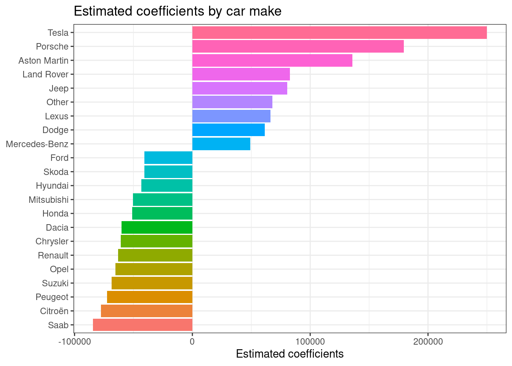
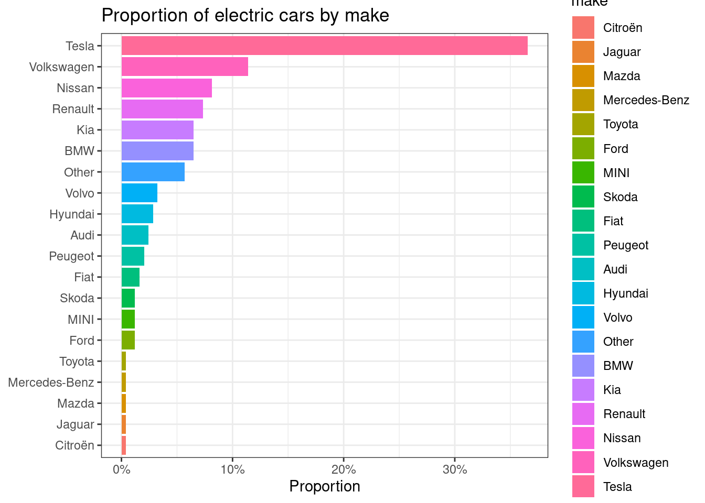
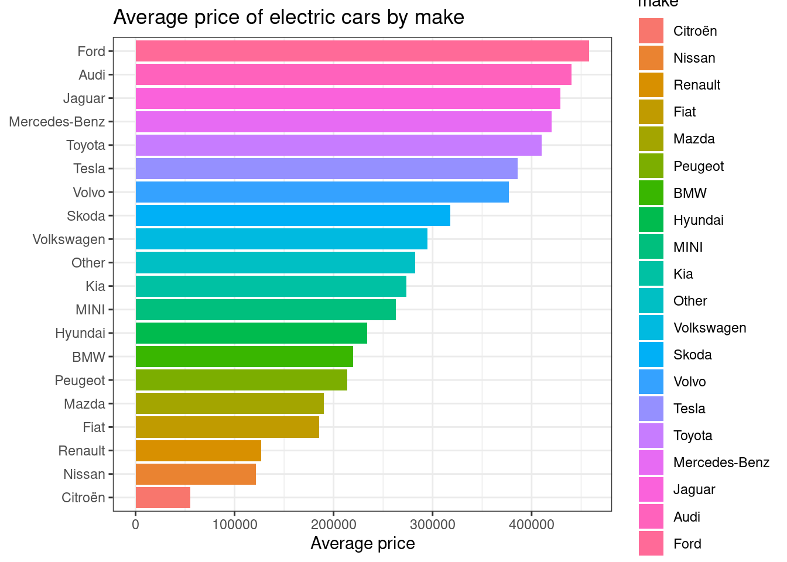
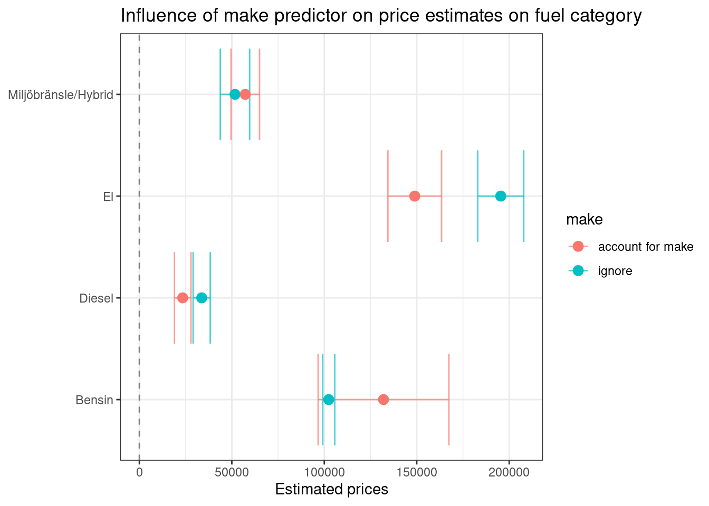
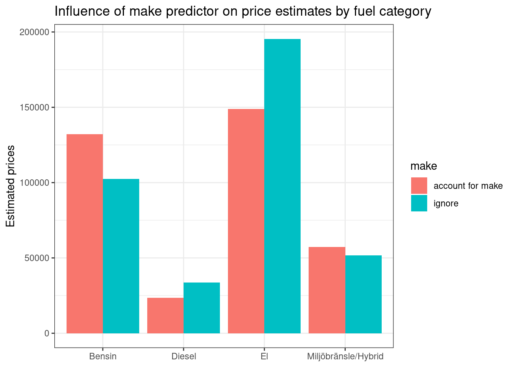
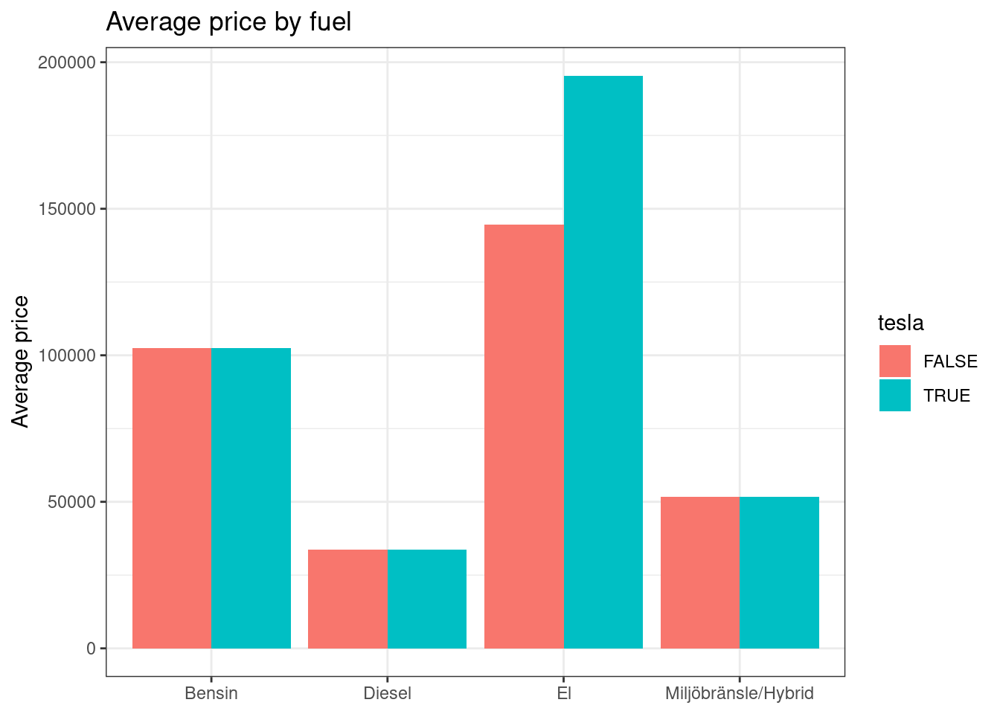

4 Results and discussion
4.1 EDA
The raw data was preprocessed as described in the Data Preprocessing section of the Theory chapter (-?sec-preprocess). Here we take a closer look at the data.
Overview
# A tibble: 7,535 × 18
id make model make_model fuel gearbox mileage year type drive hp
<chr> <fct> <fct> <fct> <fct> <fct> <int> <int> <fct> <fct> <int>
1 1400504… Audi A3 Audi A3 Bens… Manuell 207611 2005 Halv… Fyrh… 200
2 1400489… Skoda Octa… Skoda Oct… Dies… Manuell 21218 2014 Kombi Fyrh… 105
3 1400612… BMW 420 BMW 420 Dies… Automat 19586 2015 Halv… Tvåh… 184
4 1400546… Kia Opti… Kia Optima Dies… Automat 23700 2012 Sedan Tvåh… 136
5 1400603… Ford S-Max Ford S-Max Dies… Automat 20850 2012 Fami… Tvåh… 200
6 1400631… Volk… Golf Volkswage… Bens… Automat 10840 2017 Kombi Fyrh… 180
7 1400643… Saab 9-3 Saab 9-3 Bens… Automat 26340 2006 Kombi Tvåh… 176
8 1400617… Merc… E Mercedes-… Dies… Automat 55423 2006 Kombi Tvåh… 150
9 1400675… BMW 525 BMW 525 Bens… Automat 28557 2006 Kombi Tvåh… 218
10 1400592… Audi A6 Audi A6 Dies… Automat 24219 2013 Kombi Fyrh… 204
# ℹ 7,525 more rows
# ℹ 7 more variables: color <fct>, first_in_traffic <date>, region <fct>,
# price <int>, age <dbl>, days_in_traffic <int>, miles_per_day <dbl>The entire data set consists of 7 661 observations with 18 features each. Each observation is an ad for a used car.
Missing data
Several of the observations in the raw data had missing values in the price column. Those where filtered out at the very start as price is our target value.
There are also some 700 observations that are have missing values in the motorsize column. Most of these are electric cars (see Figure 4.1). I want to keep the electric cars in the data set so I don’t want to remove those observations all together.
There does seem to be some sort of relationship between motor size and price. (See Figure 4.2). Removing the column might have a negative impact on the model’s ability to predict prices, but keeping it leaves me with a whole lot of missing values, and issues with electric cars. One way might be to impute the column with the mean or median of the motor sizes, but since electric cars actually don’t have a motor size, that seems wrong.
My final decision was to remove the motorsize column.

Other columns with missing data
Three remaining columns have issing values. They are all categorical values and it doesn’t make sense to impute them with the most common values. Since there will be a maximum loss of 123 observations, the rows with the missing values will be removed.
Handling uncommon values
Some values in the make category were only present in a few observations. This increases the risk of having values that are only present in the training or test data sets. At least one make was present only in the single observation. Even when using a stratified split, that observation would end up in either the training or the test set.
I decided to keep them in the data, but group them together under the “Other” name. The cutoff is set to be less than the number of columns in the data set, that is, 18.
4.2 Results
Which car makes have a significant impact on the price?
Of the 63 unique car makes in the original data set, 28 had 18 observations or fewer. As mentioned, these are grouped together under the “Other” name, which gives us 36 unique values for the make category. One question I wanted to ask was, which makes (if any) seem to have an impact on the asking price for the car? Figure 4.3 shows the estimated coefficients of the 20 car makes that have a statistically significant effect on the price.

Any other car make has an average price close enough to the mean price that it can’t be said that the make alone has any effect on the price.
Tesla is driving up the prices of electric cars
From Figure 4.3 we see that the car make that has the highest effect on price is Tesla.
Since Tesla exclusively makes electric cars, the question is how this might affect a model’s ability to predict the prices of that kind of vehicle.
A vast majority, almost 40%, of the electric cars in the data set are Teslas. They might not be the most expensive (see Figure 4.4 (b)), but the electric car makes with higher average prices are not nearly as well represented in the data.





4.3 Discussion
Legal and ethical issues regarding data mining
The data behind this analysis was collected using an automated method, often called data mining or scraping.
Blockets EULA (End User License Agreement) states the following regarding scraping their data (blocket.se, 2024):
Du har inte rätt att kopiera, reproducera, publicera, ladda upp, skicka eller distribuera något material eller någon information från Webbplatsen utan föregående skriftligt tillstånd från Blocket. (…)
Användning av automatiserade tjänster såsom robotar, spindlar, indexering eller liknande, samt andra metoder för systematisk användning av innehållet på Webbplatsen är inte tillåtet utan föregående skriftligt tillstånd från Blocket.
All otillåten användning medför ersättningsskyldighet. Den som avsiktligt eller genom grov oaktsamhet bryter mot lagen kan straffas med böter eller fängelse upp till två år och bli dömd att betala skadestånd.
Or, in english, (my translation and emphasis):
You are not allowed to copy, reproduce, publish, upload, send or distribute any material or any information from the web site without prior written consent from Blocket. (…)
Use of automated services such as robots, spiders, indexing or the like, and other methods for systematic use of the web site’s content is prohibited with prior written consent from Blocket.
Any prohibited use comes with an obligation to compensate. Anyone who, knowingly or by gross negligence, breaks the law can be punished by fine or prison for up to two years, and be ordered to pay damages.
It is not clear from the text which law is referred to. The EULA also states that Blocket owns the immaterial rights to any material such as text, images, design and information meda available by using the site. This, then would be a question of copyright law. It is however not immediately clear that the contents scraped from the web site is such that it would fall under copyright law. 1
Sweden is however a member of the European Union, and in 1996 the European Council approved the Directive 96/9/EC of the European Parliament and of the Council of 11 March 1996 on the legal protection of databases, (European Union, 2019).2
The directive, amended in 2019, works as an analog to the copyright laws, and protects the rights of database creators and owners. This might be the law that is referred to in the Blocket EULA.
Should probably write Blocket and ask them!
- Difference b/w copyrighted material such as images, and information in a database. Also difference b/w US and European law.
- EU sui generis law protects database owners but exceptions could be made for research. European Union (2019)
Data analysis
- Would new car price be a significant variable? We can only guess as we didn’t include it.
- Gathering the description data and performing textual analysis might give more insights. The car might be broken down, deregistered, or any other number of factors that affect the asking price but do not show up in the data.
- Collect the same data over time to find patterns
- Electric cars are underrepresented - what will that to to the data? <- Introduction?
Parameter selection
Statistical methods vs. domain knowledge